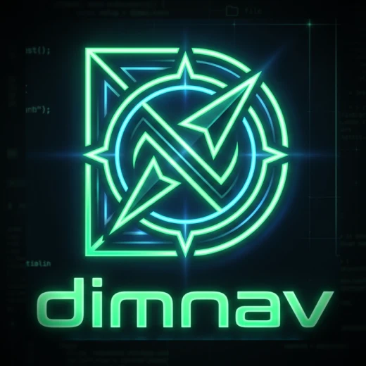
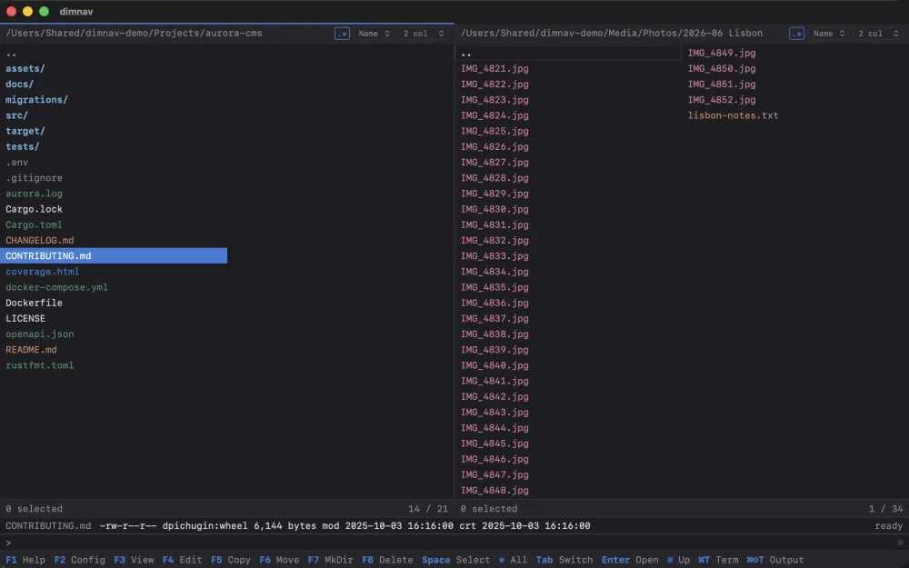
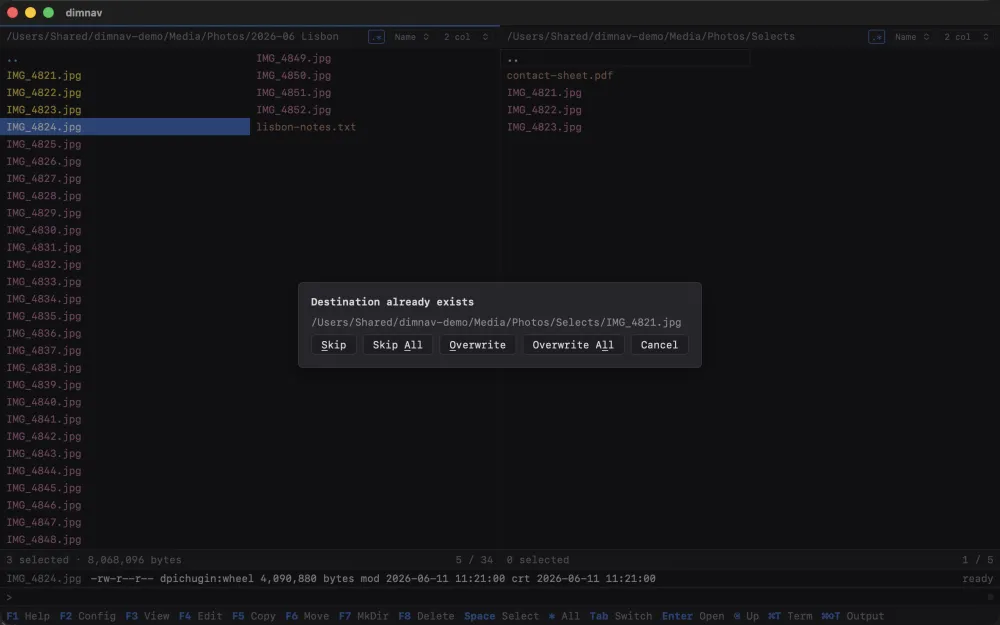
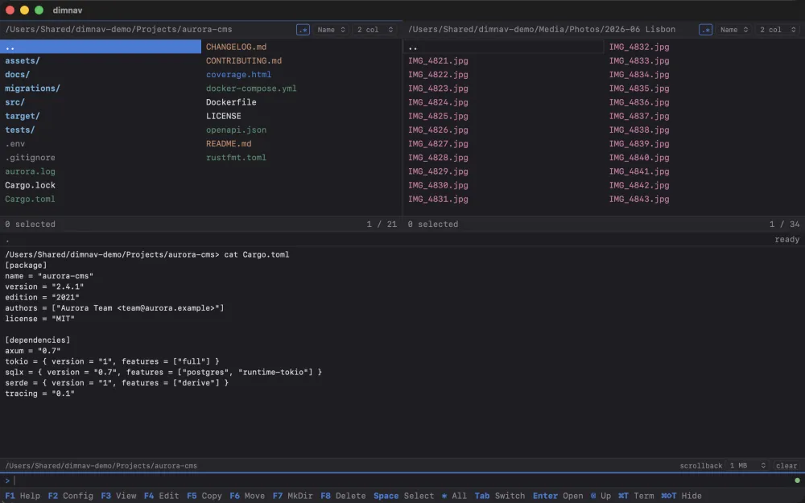
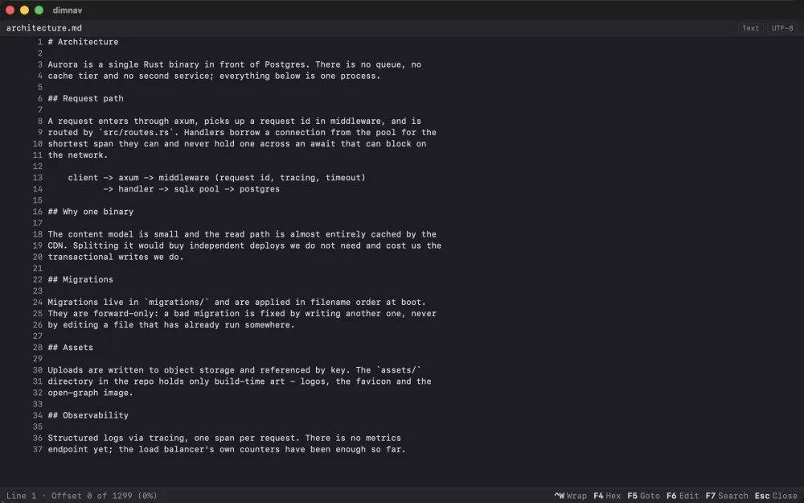

Two panels. One keyboard.
A fast file manager for macOS in the Norton Commander lineage. Source and destination side by side, every operation on a function key, with a terminal, viewer and editor built in. Free and open source.
See it work
Eighty seconds through a working directory: navigating, the detailed view, quick search, the viewer, selecting and copying, the built-in terminal, a change arriving from outside the app, and the theme picker. No audio — captions name the keys.
What it does
- Two panels Source and destination on screen at once. One, two or three columns, or a detailed view with size, date and permissions — per panel, and remembered between launches.
- One key per operation F5 copy, F6 move, F7 new folder, F8 delete. Asynchronous, cancellable, with progress and Far Manager-style collision handling — and never a silent overwrite.
- Panels that keep up Both directories are watched. A change made in Finder, a terminal or a build tool appears on its own, without moving your cursor, your selection or your scroll position.
-
Built-in terminal
Runs in the panel's directory, and
cdmoves the panel with it. ⌃Enter drops the name under the cursor onto the command line; history survives restarts. - Viewer and editor F3 and F4 open a file in place — text, hex or image. Search, goto, encoding detection, and a save that keeps the encoding, line endings and permissions it found.
- Find it as you type ⌘F jumps to an entry as you spell it. A character that matches nothing is refused, so the cursor is always sitting on a real file.
-
Colour that means something
Ten file categories, decided by name rather than by the execute
bit — so a
0755PDF reads as a document. The same rule decides whether Enter opens it or runs it. - Yours to configure F2 for themes and settings, applied live with no restart, or hand-edit a plain TOML file. F1 lists every binding, generated from the live keymap so it cannot drift.
- Native, signed, self-updating A Rust core with a thin rendering layer: small download, quick launch, low memory. Developer ID signed, notarized by Apple, and the updates are signed too.
Apple Silicon, macOS 13 and later — Windows and Linux are planned. Deletes are real deletes unless you tick Move to Trash, and when an operation needs privileges macOS asks for them: the app never sees your password.
A closer look
-

Two panels, coloured by file type, with the focused entry's attributes below. -

Copy asks before it overwrites — Skip, Overwrite, or all of them at once. -

The terminal runs where the panel is pointing, andcdmoves the panel. -

The viewer opens a file in place — text, hex or image — with search, goto and wrapping on the function keys.
The keys that matter
| Tab | Switch panel |
| Enter | Enter a directory, open a file, or run an executable |
| Backspace | Go up, landing on the folder you just left |
| Space | Select — Shift and an arrow sweeps a run |
| F3 / F4 | View / edit |
| F5 / F6 | Copy / move |
| F7 / F8 | New folder / delete |
| ⌃1–⌃4 / ⌃S | Column count and detailed view / sort order |
| ⌃= | Show this folder on the other panel |
| ⌘F / ⌘T | Quick search / terminal |
| F1 / F2 | Every other shortcut / settings |
Open source
dimnav is MIT licensed and developed in the open. Read the source, file an issue, or send a patch on GitHub. If it saves you time, you can sponsor its development.